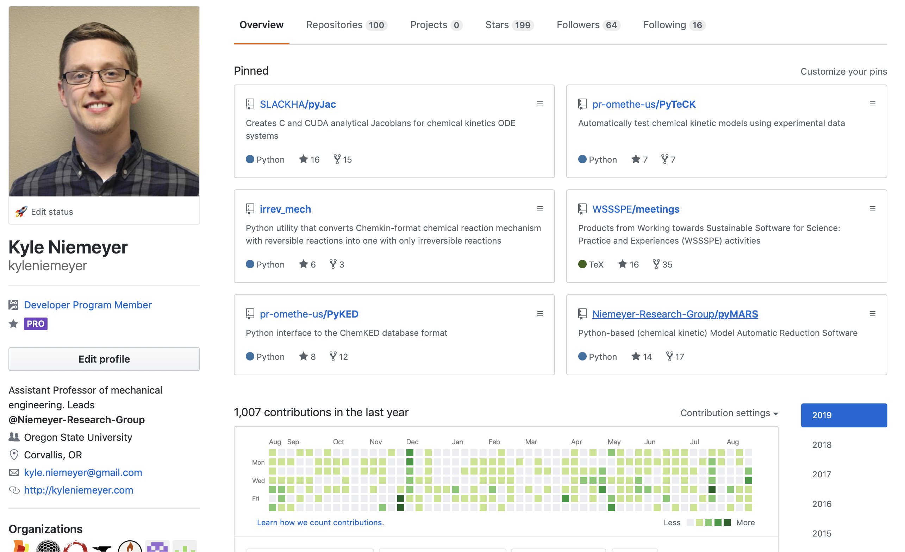

# Building Better Scientific Software
### Motivation Nearly all research relies on software—even experimental—but researchers don't get trained in best practices in the same way as experimental methods.
### What are we going to talk about? - Version control - Collaborative software development - Licensing and copyright - Testing and test coverage - Continuous integration - Documentation - Open science, software citation - Reproducibility
## Who am I? Dr. Kyle Niemeyer, Assistant Professor, MIME **Background:** computational combustion modeling **Languages:** Matlab, Fortran, C/C++/CUDA, Python
